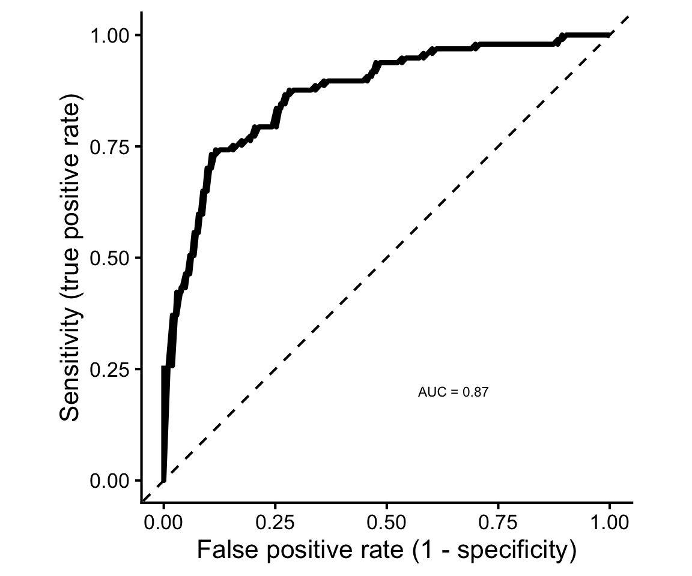
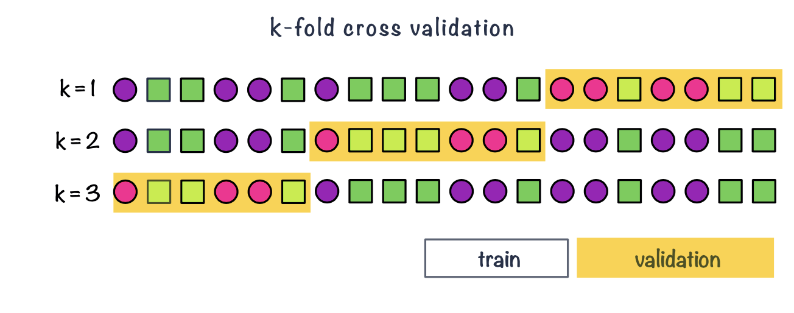
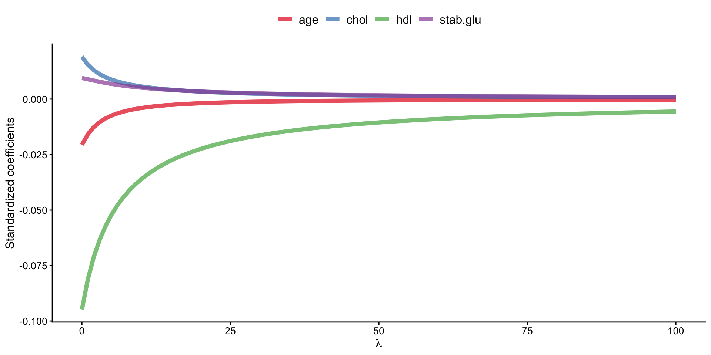
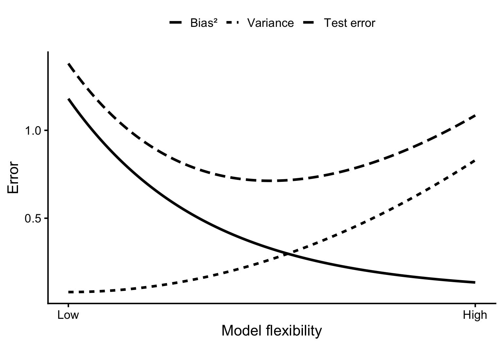
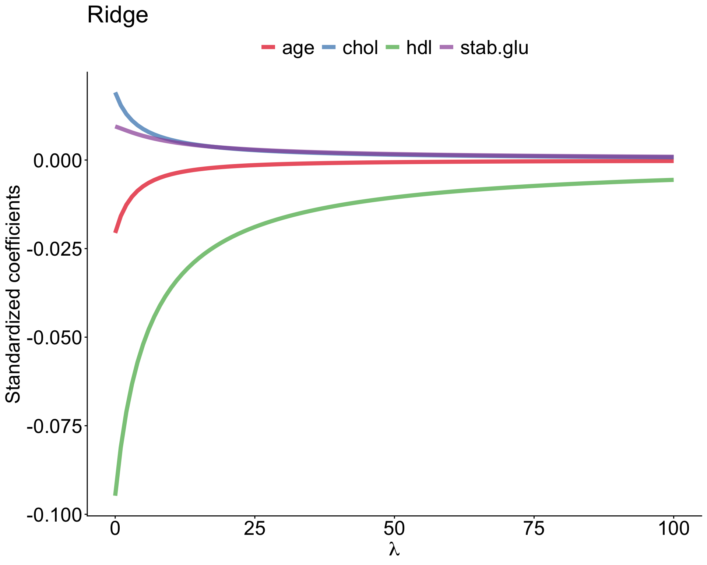
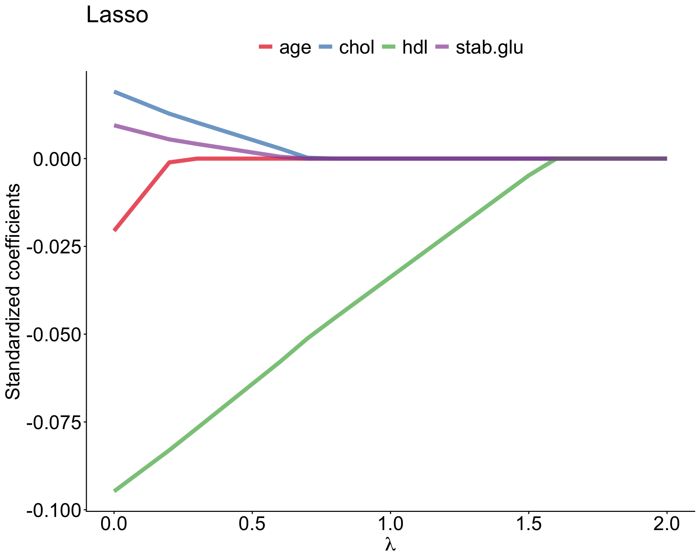
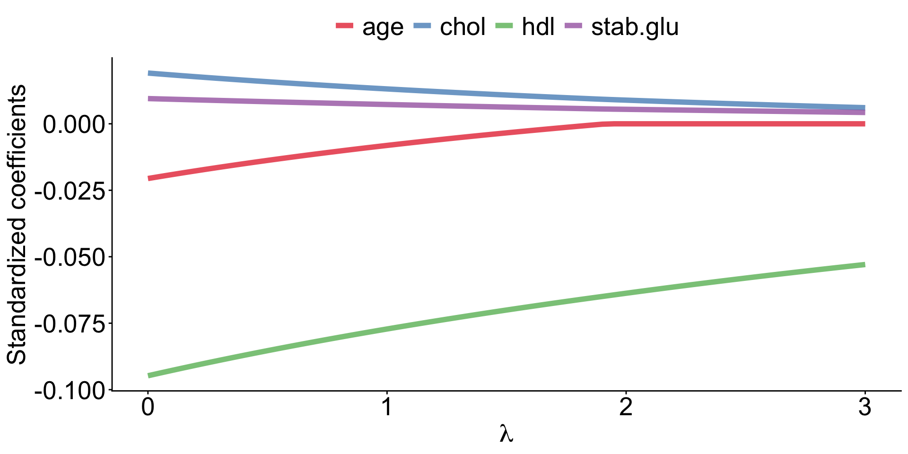

From Linear Models to Machine Learning
Inference vs. prediction
Inference
- So far, we have mainly used statistical models for inference to learn about relationships in the data.
Inference vs. prediction
Prediction
- Another goal is prediction. Here, we use observed data to build a model that can predict the outcome for new observations.
- If the outcome is continuous, such as age or gene expression, we have a regression task.
- If the outcome consists of categories, such as disease versus healthy, we have a classification task.
Here, an important question is how well the model performs on new, unseen data.
What is supervised learning?
- In supervised learning, we use observations for which the outcome is already known to train a model. The measured variables are used as predictors, while the known outcome provides the label or target that we want the model to learn to predict.

Figure 1: Illustration of supervised learning, where labelled data are used to train a model that can make predictions for new observations.
Data splitting
A model can often be made to fit the observed data very well.
If a model adapts too closely to the particular patterns, noise or peculiarities of the training data, it may fail to generalize to new observations - overfitting.
To obtain a more realistic estimate of predictive performance, we separate the data used to train the model from the data used to evaluate it - data splitting.
Data splitting
Train / validation / test

Figure 2: Example of splitting data into train (50%), validation (25%) and test (25%) set
Data splitting
Cross validation

Figure 3: Example of k-fold cross validation split (k = 3)
Data splitting
Leave-one-out cross-validation

Figure 4: Example of LOOCV, leave-one-out cross validation
Data splitting
Nested cross-validation
Nested cross-validation uses two cross-validation loops:
- The outer cross-validation is used to estimate how well the final modelling procedure performs on new data.
- The inner cross-validation is used to select or tune the model.
E.g., in 5-fold nested cross-validation:
- Split the data into 5 outer folds.
- Keep one outer fold aside as the test set.
- Use the remaining data as the outer training set.
- Within this training set, perform another k-fold cross-validation to select the best model or hyperparameters.
- Fit the selected model using all of the outer training data.
- Evaluate its performance on the outer test set.
- Repeat until every outer fold has been used once as the test set.
- The final estimate of predictive performance is obtained by summarizing performance across the outer test folds.
Evaluating regression and classification models
Evaluating regression models
prediction error
For regression tasks, predictions are numeric:
\[ \hat{y}_i \]
We compare each observed value with its predicted value:
\[ e_i = y_i - \hat{y}_i \]
- Smaller prediction errors mean better predictive performance.
- Errors should be evaluated on validation/test data, not only on training data.
- Good model fit does not always mean good prediction.
Evaluating regression models
Common regression metrics
Mean Absolute Error
\[ MAE = \frac{1}{N}\sum_{i=1}^{N}|y_i - \hat{y}_i| \]
Average absolute prediction error, in the same units as the outcome.
Root Mean Squared Error
\[ RMSE = \sqrt{\frac{1}{N}\sum_{i=1}^{N}(y_i - \hat{y}_i)^2} \]
Also in the same units, but gives more weight to large errors.
Evaluating classification models
Classification predictions
Many classifiers do not directly give a class label.
They first give a score or predicted probability:
\[ P(Y = \text{positive}) \]
- Example: probability that a biopsy is malignant.
- To turn this into a class prediction, we choose a threshold.
- If the probability is above the threshold, predict positive.
Evaluating classification models
Threshold-based metrics
After choosing a threshold, we compare predicted classes with true labels.
| Predicted positive | Predicted negative | |
|---|---|---|
| Actual positive | TP | FN |
| Actual negative | FP | TN |
- Accuracy: overall proportion classified correctly.
- Sensitivity: among actual positives, how many did we find?
- Specificity: among actual negatives, how many did we correctly exclude?
Evaluating classification models
ROC curve and AUC
Changing the threshold changes the classifier performance.
The ROC curve shows this trade-off across thresholds:
\[ \text{sensitivity vs. } 1 - \text{specificity} \]
\[ \text{AUC} = \text{overall ability to distinguish classes} \]
Linear machine-learning models
Regularized linear models
definition
- Regularized regression expands on the regression by adding a penalty term(s) to shrink the model coefficients of less important features towards zero.
- This can help to prevent overfitting and improve the accuracy of the predictive model.
- Depending on the penalty added, we talk about Ridge, Lasso or Elastic Nets regression.
Regularized regression
Ridge regression
- Previously we saw that the least squares fitting procedure estimates model coefficients \(\beta_0, \beta_1, \cdots, \beta_p\) using the values that minimize the residual sum of squares: \[RSS = \sum_{i=1}^{n} \left( y_i - \beta_0 - \sum_{j=1}^{p}\beta_jx_{ij} \right)^2\]
- In regularized regression the coefficients are estimated by minimizing slightly different quantity. Specifically, in Ridge regression we estimate \(\hat\beta^{L}\) that minimizes \[\sum_{i=1}^{n} \left( y_i - \beta_0 - \sum_{j=1}^{p}\beta_jx_{ij} \right)^2 + \lambda \sum_{j=1}^{p}\beta_j^2 = RSS + \lambda \sum_{j=1}^{p}\beta_j^2 \tag{1}\]
where:
\(\lambda \ge 0\) is a tuning parameter to be determined separately e.g. via cross-validation
Regularized regression
Ridge regression
\[\sum_{i=1}^{n} \left( y_i - \beta_0 - \sum_{j=1}^{p}\beta_jx_{ij} \right)^2 + \lambda \sum_{j=1}^{p}\beta_j^2 = RSS + \lambda \sum_{j=1}^{p}\beta_j^2\]
Equation 1 trades two different criteria:
- lasso regression seeks coefficient estimates that fit the data well, by making RSS small
- however, the second term \(\lambda \sum_{j=1}^{p}\beta_j^2\), called shrinkage penalty is small when \(\beta_1, \cdots, \beta_p\) are close to zero, so it has the effect of shrinking the estimates of \(\beta_j\) towards zero.
- the tuning parameter \(\lambda\) controls the relative impact of these two terms on the regression coefficient estimates
- when \(\lambda = 0\), the penalty term has no effect
- as \(\lambda \rightarrow \infty\) the impact of the shrinkage penalty grows and the ridge regression coefficient estimates approach zero
Regularized regression
Ridge regression

Example of Ridge regression to model BMI using age, chol, hdl and glucose variables: model coefficients are plotted over a range of lambda values, showing how initially for small lambda values all variables are part of the model and how they gradually shrink towards zero for larger lambda values.
Bias-variance trade-off
Ridge regression can improve prediction by accepting a little more bias in exchange for lower variance.
Bias: error from a model that is too simple
→ may miss real patterns
→ underfittingVariance: error from a model that is too sensitive to the training data
→ may capture noise
→ overfittingRegularization reduces flexibility by shrinking coefficients
→ often lower variance
→ better prediction on new data
\[ \text{prediction error} \approx \text{bias}^2 + \text{variance} + \text{irreducible error} \]

Ridge vs. Lasso
In Ridge regression we minimize: \[\sum_{i=1}^{n} \left( y_i - \beta_0 - \sum_{j=1}^{p}\beta_jx_{ij} \right)^2 + \lambda \sum_{j=1}^{p}\beta_j^2 = RSS + \lambda \sum_{j=1}^{p}\beta_j^2 \tag{2}\] where \(\lambda \sum_{j=1}^{p}\beta_j^2\) is also known as L2 regularization element or \(l_2\) penalty
In Lasso regression, that is Least Absolute Shrinkage and Selection Operator regression we change penalty term to absolute value of the regression coefficients: \[\sum_{i=1}^{n} \left( y_i - \beta_0 - \sum_{j=1}^{p}\beta_jx_{ij} \right)^2 + \lambda \sum_{j=1}^{p}|\beta_j| = RSS + \lambda \sum_{j=1}^{p}|\beta_j| \tag{3}\] where \(\lambda \sum_{j=1}^{p}|\beta_j|\) is also known as L1 regularization element or \(l_1\) penalty
Ridge vs. Lasso


Elastic Net
Elastic Net use both L1 and L2 penalties to try to find middle grounds by performing parameter shrinkage and variable selection. \[\sum_{i=1}^{n} \left( y_i - \beta_0 - \sum_{j=1}^{p}\beta_jx_{ij} \right)^2 + \lambda \sum_{j=1}^{p}|\beta_j| + \lambda \sum_{j=1}^{p}\beta_j^2 = RSS + \lambda \sum_{j=1}^{p}|\beta_j| + \lambda \sum_{j=1}^{p}\beta_j^2 \tag{4}\]

Example of Elastic Net regression to model BMI using age, chol, hdl and glucose variables: model coefficients are plotted over a range of lambda values and alpha value 0.1, showing the changes of model coefficients as a function of lambda being somewhere between those for Ridge and Lasso regression.
Elastic Net
In R with glmnet
In the glmnet library we can fit Elastic Net by setting parameters \(\alpha\). Under the hood glmnet minimizes a cost function: \[\sum_{i_=1}^{n}(y_i-\hat y_i)^2 + \lambda \left ( (1-\alpha) \sum_{j=1}^{p}\beta_j^2 + \alpha \sum_{j=1}^{p}|\beta_j|\right )\] where:
- \(n\) is the number of samples
- \(p\) is the number of parameters
- \(\lambda\), \(\alpha\) hyperparameters control the shrinkage
and:
- \(\alpha = 0\) corresponds to Ridge regression
- \(\alpha=1\) this corresponds to Lasso regression
- \(0 < \alpha < 1\) gives Elastic Net regularization, combining both L1 and L2 regularization terms
Logistic Lasso
Logistic regression + Lasso regularization
- We estimate set of coefficients \(\hat \beta\) that minimize the combined logistic loss function and the Lasso penalty:
\[ \left( \sum_{i=1}^n [y_i \log(p_i) + (1-y_i) \log(1-p_i)] \right) + \lambda \sum_{j=1}^p |\beta_j| \]
where:
- \(y_i\) represents the binary outcome (0 or 1)
- \(p_i\) is the predicted probability of \(y_i = 1\) given by the logistic model
- \(\lambda\) is the regularization parameter that controls the strength of the Lasso penalty
- \(n\) is the number of observations
- \(p\) is the number of predictors.
Other ML algorithms out there
Other ML algorithms out there
Regularized linear models are only one part of the supervised learning toolbox.
Tree-based methods
decision trees, random forests, gradient boostingDistance-based methods
k-nearest neighboursMargin-based methods
support vector machinesNeural networks
flexible models for complex patterns
Other ML algorithms out there
The algorithms differ, but the workflow stays the same:
\[ \text{train} \rightarrow \text{tune} \rightarrow \text{evaluate on unseen data} \]
Let’s do some exercises
Statistical Methods for Life Sciences